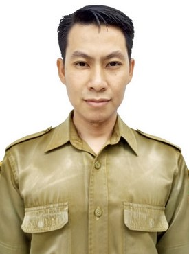
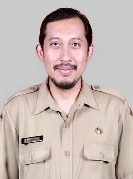
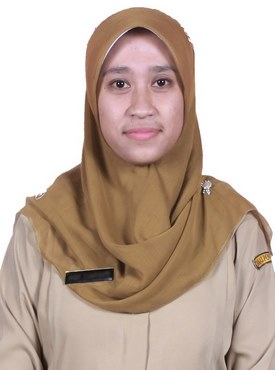
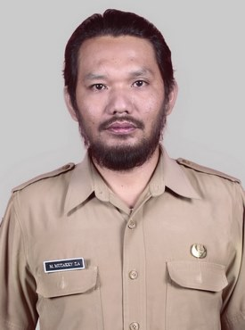
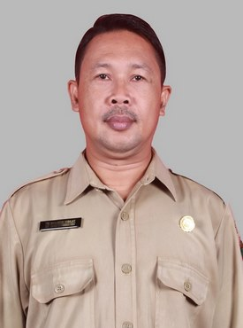
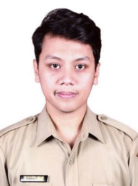
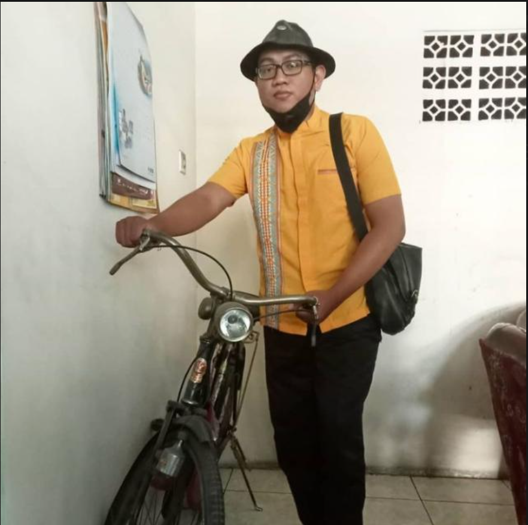

Kepala Jurusan
Riza Habiby S.Sn.
Penanggung jawab jurusan DKV
SMK Negeri 5 Malang berdiri pada 29 Januari 1998 dengan SK Pendirian No. 13a/O/1998. Awalnya memiliki keunggulan di bidang Kriya (Kayu, Keramik, Tekstil) dan Busana Butik. Seiring perubahan kurikulum dan kebutuhan industri kreatif digital, pada tahun 2005 sekolah mulai membuka kompetensi keahlian Multimedia (awal dari cikal bakal Desain Komunikasi Visual). Pada tahun 2018, Jurusan Multimedia resmi bertransformasi menjadi Desain Komunikasi Visual (DKV) dengan kurikulum yang lebih terfokus pada branding, ilustrasi, dan konten visual digital. Sejak saat itu, DKV SMKN 5 Malang terus berkembang, menghadirkan laboratorium desain grafis, studio ilustrasi, dan fasilitas pendukung lainnya. Bekerja sama dengan komunitas desainer Malang, CV. Karya Desain Nusantara, dan Malang Creative Center (MCC), jurusan DKV aktif menggelar pameran tahunan (DKV Expo), workshop desain, serta magang di industri kreatif. Hingga 2025, jurusan ini telah meluluskan ratusan desainer muda yang banyak berkarya di perusahaan periklanan, start-up, dan studio kreatif.
29 Januari 1998 — SMKN 5 Malang resmi berdiri dengan jurusan Kriya dan Busana.
2005 — Jurusan Multimedia dibuka sebagai cikal bakal DKV, fokus desain grafis dan produksi konten.
2018 — Rebranding menjadi DKV. Multimedia bertransformasi menjadi Desain Komunikasi Visual dengan kurikulum lebih spesifik.
2022 — Pameran DKV Expo #1. Menggelar pameran karya desain siswa pertama yang dibuka untuk publik di Malang Creative Center.
2025 — Kelas Industri Desain. Kerja sama dengan MCC dan Studio Desain lokal untuk teaching factory dan proyek klien riil.
Perkenalkan guru pengajar DKV dengan pengalaman di desain visual, branding, dan multimedia.

Penanggung jawab jurusan DKV

Pengajar Desain Visual

Pengajar desain grafis

Pengajar Branding

Pengajar Multimedia

Pengajar Animasi

Pengajar Tipografi

Pengajar Desain IT
Contoh karya DKV dalam bentuk foto dengan judul dan deskripsi visual.

Redesign identitas visual untuk kegiatan pameran tahunan.

Poster informatif untuk program kesehatan dan lingkungan.

Kumpulan proyek digital siap untuk presentasi ke industri.